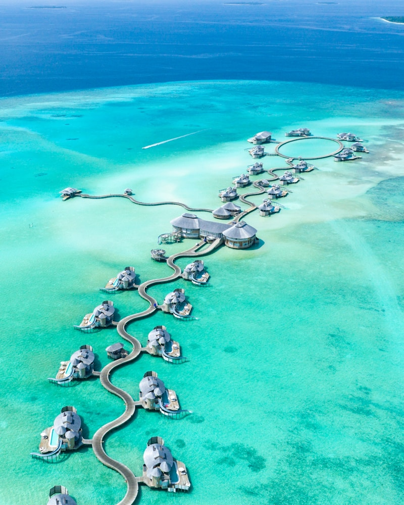
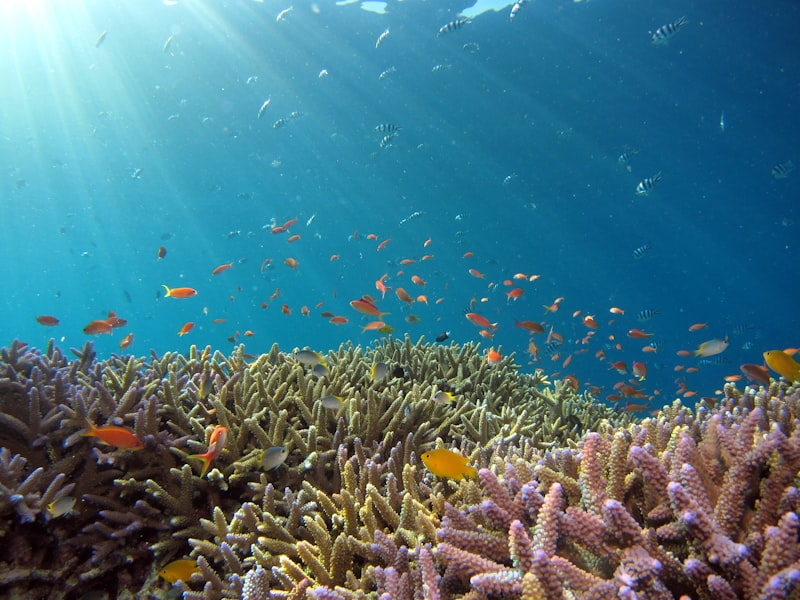
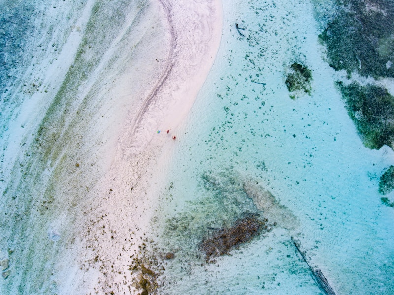
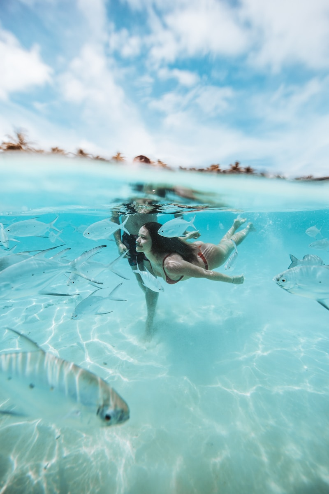
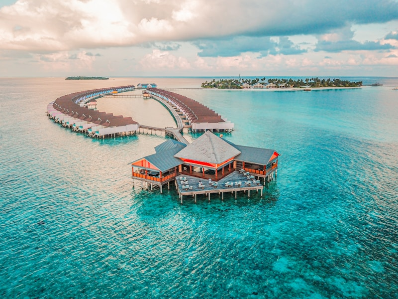
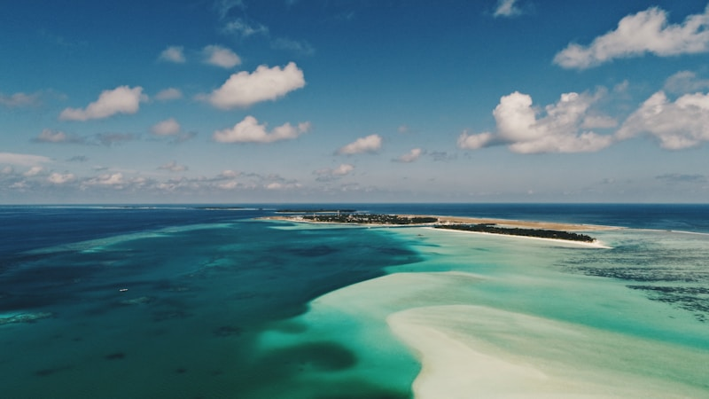

@media (max-width: 1024px) {
.trust-grid {
grid-template-columns: 1fr;
gap: 25px;
}
}
The Maldives is a shimmering archipelago of 1,192 coral islands, scattered like
pearls across the deep blue canvas of the Indian Ocean. Often described as the "last paradise on Earth," this
nation of atolls is the ultimate expression of tropical luxury and natural serenity. Here, the boundaries
between the sky and the sea blur into an endless horizon of turquoise, where white sand beaches are as soft as
powdered sugar and the underwater world is a vibrant explosion of life. Whether you are seeking a romantic
escape in an overwater villa or an adventure in one of the world's most diverse marine ecosystems, the Maldives
offers an experience that is as intimate as it is grand.
1. Malé: The Vibrant Heart of the Islands

Malé Aerial View: A dense and colorful
island city surrounded by the endless blue of the Indian Ocean. / إطلالة جوية على مالي:
مدينة جزيرة مكتظة وبالألوان محاطة باللون الأزرق اللانهائي للمحيط الهندي.
Malé, the capital of the Maldives, is a fascinating contrast to the tranquil resort
islands that surround it. Despite its small size, Malé is one of the most densely populated cities in the
world, pulsating with energy and color. The city is the gateway to the Maldives, a place where traditional
Dhivehi culture meets the pace of modern trade. Walking through the bustling Malé Fish Market, you can see
the day’s bounty being brought in, while the nearby Fruit and Vegetable Market offers a sensory overload of
local spices and tropical produce.
The city's history is best explored at the Old Friday Mosque (Hukuru Miskiy), built in
1656 from intricately carved coral stone. Its detailed lacquer work and wood carvings are a testament to the
master craftsmanship of ancient Maldivians. For a peaceful break, the Sultan Park—the site of the former
Royal Palace—offers a lush green sanctuary in the heart of the urban island. Malé provides a vital
perspective on the Maldivian way of life, bridging the gap between historical tradition and the thriving
future of the archipelago.
2. North Ari Atoll: The Diver’s Dream

Overwater Luxury: A classic Maldivian scene
featuring luxury villas perched over crystal clear turquoise waters. / الفخامة فوق الماء:
مشهد كلاسيكي من المالديف يظهر الفلل الفاخرة المقامة فوق مياه فيروزية صافية تماماً.
North Ari Atoll is celebrated worldwide as a premier destination for underwater
exploration. Its clear, nutrient-rich waters attract a vast array of marine life, from manta rays and whale
sharks to elusive hammerhead sharks. The atoll is dotted with legendary dive sites like Fish Head and Maaya
Thila, where the sheer density of coral and fish creates a mesmerizing underwater garden. For both seasoned
divers and first-time snorkelers, the atoll offers a front-row seat to one of nature’s most spectacular
shows.
Resorts in the Ari Atoll are designed to harmonize with this aquatic paradise. Many
feature house reefs that are just a few steps away from your private villa, allowing for spontaneous
encounters with sea turtles and schools of vibrant reef fish. The commitment to marine conservation here is
evident in the many coral restoration projects and eco-friendly initiatives that aim to protect this fragile
ecosystem for generations to come. It is a place where the connection to the ocean is not just a feature,
but the very essence of the stay.
3. Baa Atoll: A UNESCO Biosphere Reserve

Manta Ray Sanctuary: Baa Atoll's UNESCO
protected waters where giant manta rays gather to feed. / محمية مانتا راي: مياه با أتول
المحمية من قبل اليونسكو حيث تتجمع أسماك المانتا العملاقة لتتغذى.
Baa Atoll is a place of global ecological significance, recognized by UNESCO for its
incredible biodiversity. The crown jewel of the atoll is Hanifaru Bay, a world-renowned hotspot for manta
rays and whale sharks. During the monsoon season, hundreds of these majestic creatures gather here to feed
on plankton, creating a swirling "cyclone" of marine life that is one of the project's most breathtaking
natural phenomena. Swimming alongside these gentle giants is a humbling and unforgettable experience.
The atoll is also home to some of the Maldives' most exclusive and eco-conscious resorts.
These sanctuaries prioritize sustainability, offering "barefoot luxury" that encourages guests to disconnect
from the digital world and reconnect with nature. From organic garden-to-table dining to holistic wellness
programs inspired by the rhythm of the ocean, Baa Atoll is a haven for those seeking a deeper, more
meaningful travel experience that honors the natural world.
4. Vaadhoo Island: The Sea of Stars
Sea of Stars: A magical nighttime glow
caused by bioluminescent phytoplankton on the shores of Vaadhoo Island. / بحر النجوم: توهج
ليلي سحري ناتج عن العوالق النباتية المضيئة حيوياً على شواطئ جزيرة فادهو.
Imagine standing on a beach at night where the waves glow with a brilliant blue light,
mirroring the starry sky above. This phenomenon, known as the "Sea of Stars," occurs on Vaadhoo Island and
other locations throughout the Maldives. It is caused by bioluminescent phytoplankton that emit light when
agitated by the movement of the waves. Walking along the shoreline as the water sparkles under your feet is
a truly magical experience that feels like something out of a fairy tale.
This natural light show is a reminder of the mysterious and beautiful ways in which life
on Earth is interconnected. The best time to witness the bioluminescence is between June and October, though
it can happen throughout the year. For photographers and dreamers alike, the Sea of Stars is a bucket-list
destination that perfectly captures the ethereal beauty of the Maldivian night.
5. Maafushi: The Local Island Experience

Maafushi Beach: A vibrant and welcoming
local island beach, perfect for authentic Maldivian culture and adventure. / شاطئ مافوشي:
شاطئ جزيرة محلي يتميز بالحيوية، مثالي لتجربة الثقافة المالديفية الأصيلة والمغامرة.
Maafushi has become the face of a new era of tourism in the Maldives—one that allows
travelers to experience the islands' beauty on a more accessible budget. As the leader in the guesthouse
industry, Maafushi offers a vibrant social atmosphere, with numerous cafes, local shops, and adventure
centers. It is the perfect base for those who want to experience the "real" Maldives, interacting with local
residents and learning about their customs and traditions.
6. Addu Atoll: South of the Equator

Addu Landscape: A unique chain of linked
islands connected by scenic causeways south of the equator. / تضاريس آدو: سلسلة فريدة من
الجزر المرتبطة ببعضها البعض عبر ممرات بحرية خلابة جنوب خط الاستواء.
Addu Atoll, the southernmost atoll in the Maldives, offers a unique geography and history.
Once a secret airbase for the Royal Navy during World War II, the atoll features a chain of islands linked
by causeways, which can be explored by bicycle—a rarity in the Maldives. The Gan Island resort, occupying
the former base, retains a charming colonial feel, while the atoll's lakes and marshes provide a sanctuary
for rare bird species that aren't found elsewhere in the country.
7. The Muraka: Living Under the Sea

The Muraka: An innovative underwater
residence offering an immersive view of the colorful coral reef world. / ذي موراكا: مسكن
مبتكر تحت الماء يوفر رؤية غامرة لعالم الشعاب المرجانية الملونة.
For the ultimate in luxury innovation, The Muraka at Conrad Maldives Rangali Island is a
world-first underwater villa. Located five meters below the surface of the Indian Ocean, this two-level
residence features a master bedroom encased in a curved acrylic dome, offering 180-degree views of the
surrounding coral reef. Sleeping while colorful fish and sharks glide overhead is an experience that
redefines the concept of "ocean view" and pushes the boundaries of architectural imagination.
8. Sun Island: The Sanctuary of Nalaguraidhoo

Sun Island Resort: A lush greenery-filled
sanctuary and one of the largest resort islands in the archipelago. / منتج صن آيلاند: محمية
مليئة بالخضرة المورقة وواحدة من أكبر جزر المنتجعات في الأرخبيل.
Sun Island (Nalaguraidhoo) is one of the largest resort islands in the Maldives, offering
a vast array of activities and amenities. Known for its lush tropical vegetation and sprawling gardens, the
island is a paradise for those who Enjoy both relaxation and recreation. Whether you are cycling through the
inland jungle paths, playing a match of tennis, or indulging in an Ayurvedic treatment at the world-class
Araamu Spa, Sun Island provides a comprehensive luxury experience in a stunning natural setting.
The Timeless Dream: The Maldives is a country that
exists in a state of constant, quiet beauty. It is a place where time is measured not by hours, but by the rise
and fall of the tide and the changing colors of the sky. As the most low-lying nation on Earth, its existence is
a delicate balance with the sea, a fact that only adds to its poignant and precious allure. We hope this guide
inspires you to seek out your own piece of paradise in these islands, where every sunset is a masterpiece and
every moment is a memory in the making.
The Signature of Excellence
Why Choose Luxe Voyages?
Curated Excellence
Every destination and accommodation is hand-selected to meet the
highest standards of luxury.
Direct Booking
Book directly with verified premium providers to ensure the best rates
and exclusive perks.
Global Legacy
Our worldwide presence ensures you have premium support wherever your
journey takes you.
Guest Experiences
From Our Global Travelers
"Luxe Voyages didn't just book a trip; they crafted an unforgettable experience. Every detail
was handled with unparalleled professionalism."
Julian Montgomery
Verified
Global
Traveler